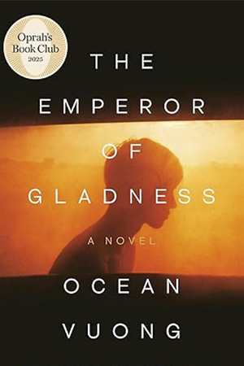
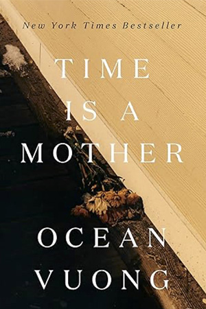
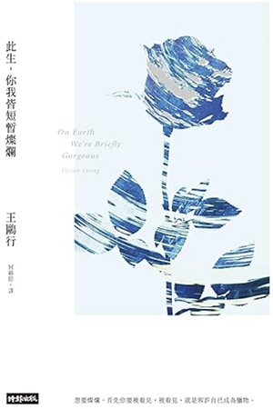
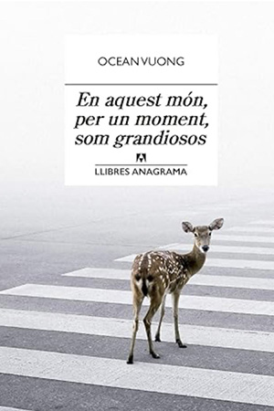

The Emperor of Gladness
On Earth We're Briefly Gorgeous: A Novel

Time Is a Mother
Night Sky with Exit Wounds
El emperador de Alegría
Un bref instant de splendeur
En la Tierra somos fugazmente grandiosos
Le temps est une mère
Céu Noturno Crivado De Balas

此生，你我皆短暫燦爛
Cielo nocturno con heridas de fuego

En aquest món, per un moment, som grandiosos